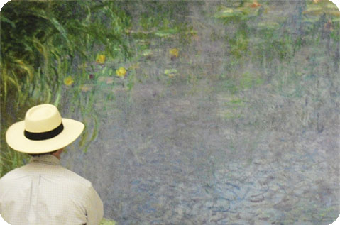
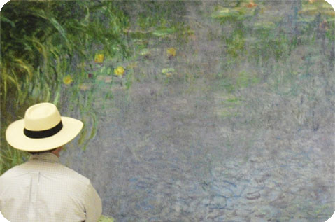

Château de Versailles
Today the château seems monstrously big, but it wasn't large enough for the army of 20,000 noblemen, servants, and hangers-on who moved in with Louis. A new city—a new capital, in fact—had to be constructed from scratch to accommodate them. Tough-thinking town planners promptly dreamed up vast mansions and avenues broader than the Champs-Élysées—all in bicep-flexing baroque.
It was hardly surprising that Louis XIV's successors rapidly felt out of sync with their architectural inheritance. Louis XV and Louis XVI preferred to cower in small retreats in the gardens, well out of the mighty château's shadow. The two most famous of these structures are the Petit Trianon, a model of classical harmony and proportion built for Louis XV, and the Hameau, where Marie-Antoinette could play at being a shepherdess amid the ersatz rusticity of her Potemkin hamlet. The contrast between the majestic and the domesticated is an important part of Versailles's appeal. But pomp and bombast tend to prevail, and you won't need reminding that you're in the world's grandest palace—or one of France's most popular tourist attractions. The park and gardens outside are a great place to stretch your legs while taking in details of formal landscaping.
The two most famous of these structures are the Petit Trianon, a model of classical harmony and proportion built for Louis XV, and the Hameau, where Marie-Antoinette could play at being a shepherdess amid the ersatz rusticity of her Potemkin hamlet. The contrast between the majestic and the domesticated is an important part of Versailles's appeal. But pomp and bombast tend to prevail, and you won't need reminding that you're in the world's grandest palace—or one of France's most popular tourist attractions. The park and gardens outside are a great place to stretch your legs while taking in details of formal landscaping.
One of the highlights of the tour is the dazzling Galerie des Glaces (Hall of Mirrors). Lavish balls were once held here, as was a later event with much greater world impact: the signing of the Treaty of Versailles, which put an end to World War I on June 28, 1919. Grands Appartements (State Apartments) are whipped into a lather of decoration, with painted ceilings, marble walls, parquet floors, and canopy beds topped with ostrich plumes. The Petits Appartements (Private Apartments), where the royal family and friends lived, are on a more human scale, lined with 18th-century gold and white rococo boiseries. The Opéra Royal, the first oval hall in France, was designed for Louis XV and inaugurated in 1770 for the marriage of 15-year-old Louis XVI to 14-year-old Austrian archduchess Marie Antoinette. Considered the finest 18th-century opera house in Europe (with acoustics to match), it has undergone extensive restoration, reopening in late 2009 as home to the Royal Opera and a major venue for world-class performers. Check out the "marble" loges—they're actually trompe l'oeil. The solemn white-and-gold chapel was completed in 1710—the king and queen attended daily mass here seated in gilt boxes. Completed in 1701 in the Louis-XIV style, the Apartements du Roi (King's Apartments) comprise a suite of 15 rooms set in a "U" around the east facade's Marble Court. While the Chambre de la Reine (Queen's Bed Chamber)—probably the most opulent bedroom in the world—was initially created for Marie Thérèse, first and only official wife of Louis XIV, to be part of the Queen's Apartments, its latest update was made for Marie-Antoinette, and its light, frilly, and incredibly sumptuous floral-motif textiles and extravagant baldachin (with its enormous panaches of ostrich feathers) reflect the chicest style of the late 18th century. The superb Salon du Grand Couvert, antechamber to the Queen's Apartments and the place where Louis XIV took his supper every evening at ten o'clock, has recently reopened after a 16-month restoration. The sumptuously painted walls and ceilings, tapestries, woodwork, and even the furniture have been restored to their original splendor, the only one of the queen's private rooms that can be seen exactly as it was first decorated in the 1670s.Despite its sprawl, the palace of Versailles can get stiflingly crowded, especially as visitors are funneled through one narrow side of most of the rooms, with the furniture and objets d'art roped off. You may be able to avoid the crowds (and lines for tours) if you arrive here at 9 am. The main entrance is near the top of the courtyard to the right; there are different lines depending on tour, physical ability, and group status. Frequent guided tours in English visit the private royal apartments. More detailed hour-long tours explore the opera house or Marie Antoinette's private parlors. You can go through the grandest rooms—including the Hall of Mirrors and Marie Antoinette's stunningly opulent bedchamber—without a group tour. To figure out the system, pick up a brochure at the information office or ticket counter or visit the site online in English.